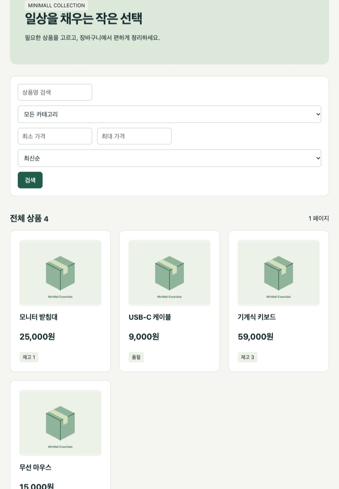
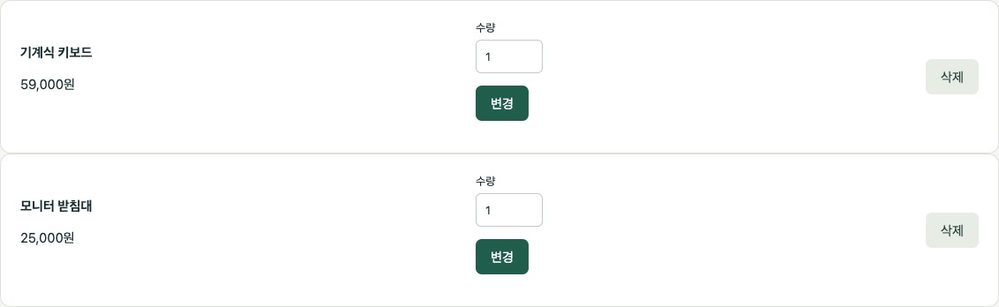
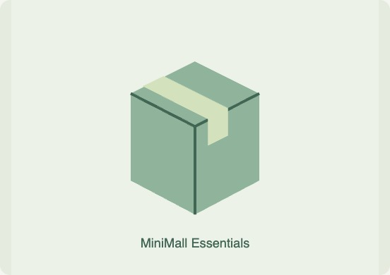

한눈에
- 무엇
- 미션 여섯으로 키운 작은 쇼핑몰
- 언제
- 2026 2학기
- 내 몫
- 발표 덱 · 대본, 사용자 쪽 점검
- 결과물
- 팀 결과: 시험 110개 통과, 요구 43 · 수용 기준 50
- 상태
- 저장소 공개 · 마지막 반영 11.04
- 110
- 시험 통과팀 결과
- 43
- 기능 요구
- 50
- 수용 기준
- 18
- 비기능 요구
만든 것


ℹ tests 110
ℹ suites 0
ℹ pass 110
ℹ fail 0
ℹ cancelled 0
ℹ skipped 0
ℹ todo 0가까이 본 화면



직접 열어 보기
누구나 열어 볼 수 있는 주소만 놓았습니다.
함께
수업 팀 과제입니다. 시험 110개 통과는 팀 결과이고, 제 몫은 발표 덱 · 대본과 사용자 쪽 점검입니다.
다음은 일하는 법
작은 목표를 큰 목표에 잇고, 할 일을 나 · AI · 남으로 나눕니다.